The numerical approximation of the turbulence equations is in principle
carried out as explained in section 3.1.2.
One basic difference is however due to the fact that turbulent
quantities are generally non-negative such that
it is necessary that the discretised forms of the physical
equations retain the principle of non-negativity.
A typical model problem would be the following:
with 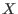 denoting any non-negative quantity,  a non-negative
source term, 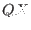 a non-negative linear sink term, and 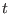 denoting
time. and 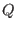 may depend on and . It can easily be shown
that with (97), remains non-negative for any
non-negative initial value 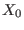 and limited . For the 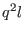-equation and the
a non-negative
source term, 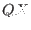 a non-negative linear sink term, and 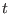 denoting
time. and 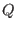 may depend on and . It can easily be shown
that with (97), remains non-negative for any
non-negative initial value 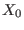 and limited . For the 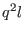-equation and the  -equation (described in
section 4.14 and section 4.15),
would be proportional to 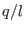 and
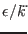, repsectively.
-equation (described in
section 4.14 and section 4.15),
would be proportional to 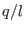 and
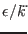, repsectively.
A straight-forward, explicit discretisation in time of (97)
can be written as
with the superscripts denoting the old (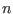) and the new (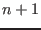) time
level and  denoting the time step. In this case, the
numerical solution on the new time level would be
denoting the time step. In this case, the
numerical solution on the new time level would be
which is negative for negative right hand side of (98),
provided that
Since it is computationally unreasonable to restrict the time step in
such a way that (100) is avoided, a numerical procedure
first published by Patankar (1980) is generally applied
which yields an always non-negative solution for 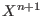,
Thus, the so-called quasi-implicit formulation
(101) by Patankar (1980)
is a sufficient condition for positivity applied in almost all
numerical turbulence models.
Karsten Bolding
2012-12-28